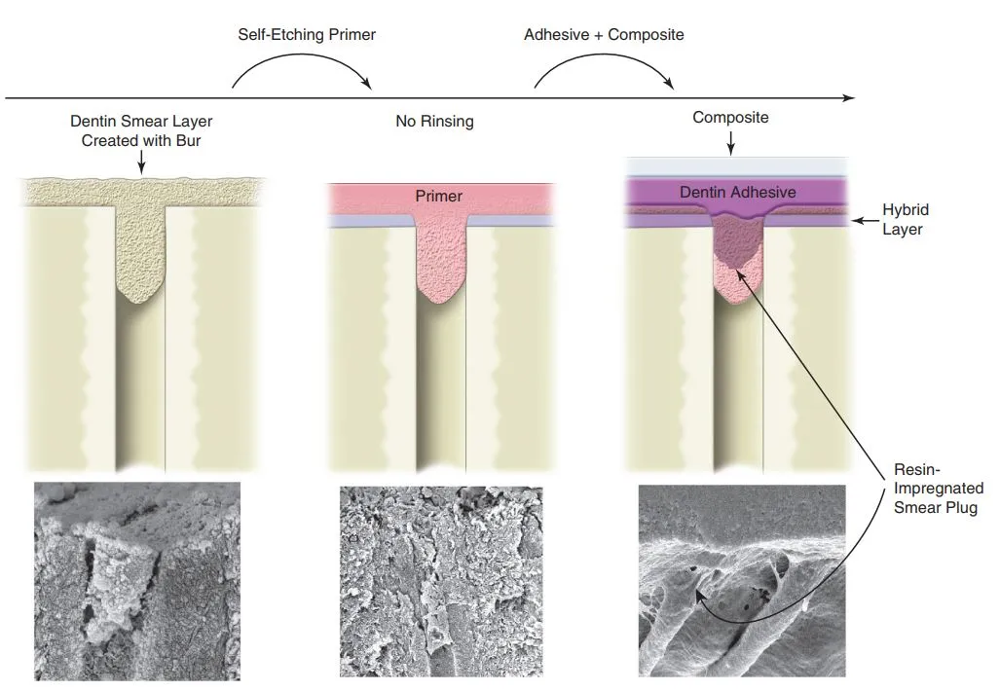
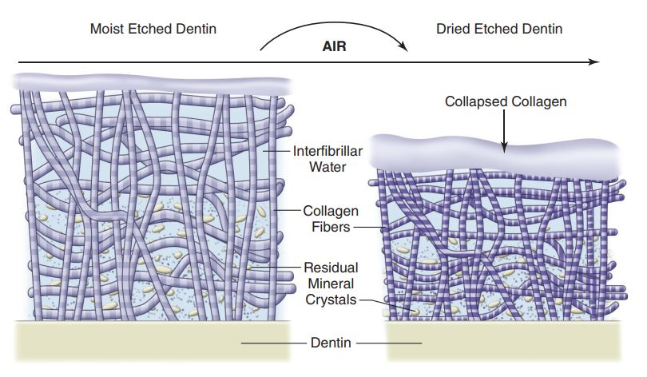

نسخه استخراجشده؛ ترجمه یا تأیید علمی انجام نشده است. وضعیت: captured
عاج برخلاف مینا، بافتی آلی، زنده و مرطوب است (۲۰٪ کلاژن، ۱۰٪ آب). بنابراین چسبندگی به آن نیازمند یک منطقه واسط پیچیده است.
🔑 اجزای پیوند عاجی:
لایههیبرید (Hybrid Layer / Zone): لایهای مخلوط از شبکه کلاژن دمینرالیزهشده عاج + رزین آدهزیو نفوذکرده که پس از لایتکیور سخت میشود. این لایه قلب اصلی چسبندگی به عاج است.
تگهای رزینی عاجی: نفوذ رزین به داخل توبولهای بازشده عاجی و تشکیل زوائد رزینی که به سیل هیدرودینامیک کمک میکند.

در سیستمهای Etch & Rinse (توتال اچ)، اسید فسفریک ماده معدنی عاج را حل کرده و داربست کلاژن را لخت میکند.
🔑 مدیریت رطوبت عاج:
خشک کردن زیاد (Over-drying): اگر عاج اتچشده با پوآر هوا کاملاً خشک شود، شبکه کلاژنیِ لختشده روی هم رمبش (Collapse) کرده و منافذ آن بسته میشوند؛ در نتیجه رزین نمیتواند نفوذ کند و باندینگ شکست میخورد.
باندینگ مرطوب (Wet Bonding): عاج باید مرطوب نگه داشته شود (پدیدهای شبیه اسفنج خیس) تا الیاف کلاژن معلق بمانند و رزین حاوی حلال (استون/اتانول) بتواند آب را جایگزین کرده و درون کلاژن نفوذ کند.

چرا با گذشت زمان استحکام پیوند کامپوزیت به عاج کاهش مییابد؟ پاسخ در آنزیمهای خود دندان است!
🔑 تهدید آنزیمی و مهار آن:
MMPs (Matrix Metalloproteinases): آنزیمهای بومی عاج هستند که در حالت عادی غیرفعالاند، اما با اسیداتچ فعال شده و الیاف کلاژنیِ پوشاندهنشده در عمق لایههیبرید را هیدرولیز و نابود میکنند.
نقش کلرهگزیدین (CHX): استفاده از کلرهگزیدین ۰.۲ تا ۲ درصد بعد از اسیداتچ عاج، این آنزیمها را مهار کرده و عمر لایههیبرید را به شدت افزایش میدهد.